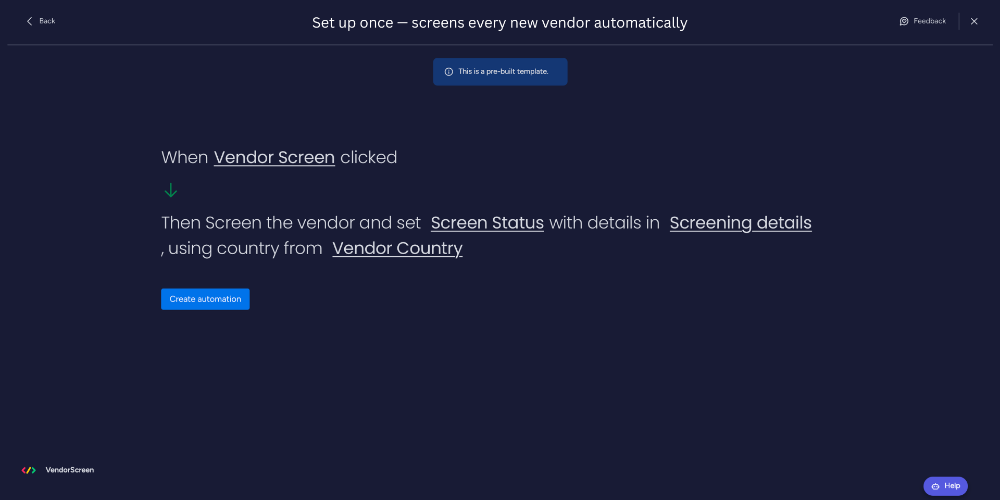
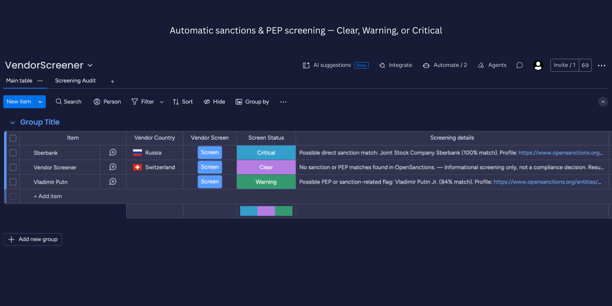
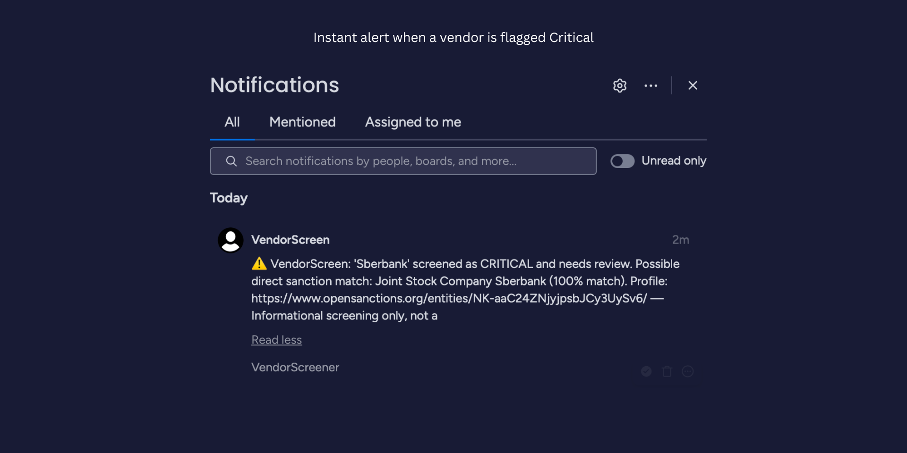
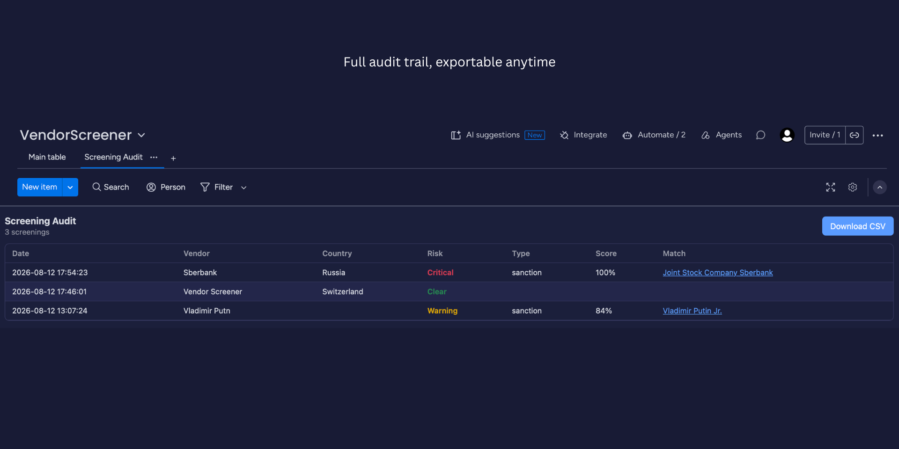
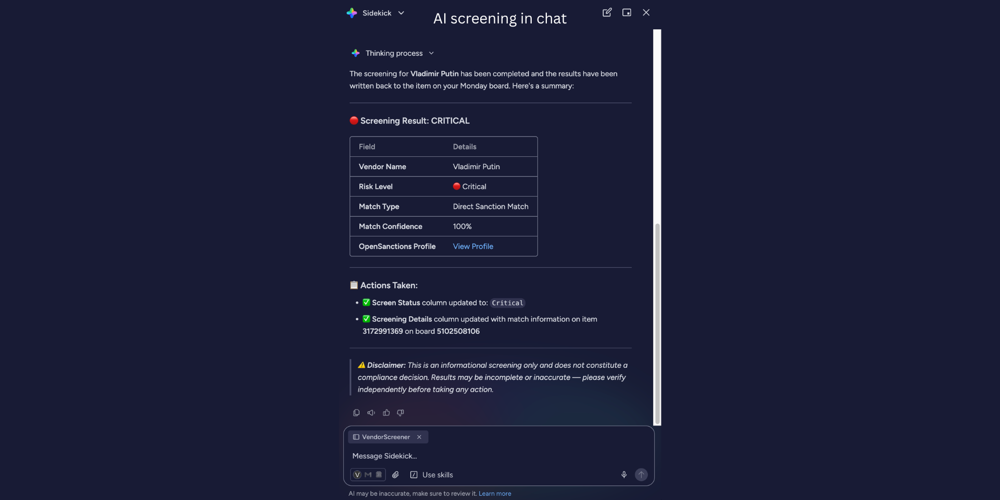

How to use VendorScreen
What VendorScreen does
VendorScreen checks each vendor you add to a board against global sanctions and PEP (politically exposed person) watchlists (via OpenSanctions) and writes an indicative result — Clear, Warning, or Critical — plus supporting details back to your board. Trigger it on demand with a button click, or straight from monday's AI chat.
Before you start (prerequisites)
- A monday.com account where you can add apps and build automations.
- A board where your vendors/suppliers live (one row = one vendor).
- Two columns to hold the result: a Status column and a Text column. Optionally a Country column to sharpen matching.
- A Button column — this is how you trigger a screening on demand, with a click.
Step 1 — Install the app
Open the VendorScreen listing in the monday.com marketplace and click Install. Approve the requested permissions (read/write your boards and send notifications). VendorScreen is not tied to any specific board — you choose the board and columns when you set up the automation.
Step 2 — Prepare your board
- Open the board with your vendors.
- Make sure it has a Status column (this will show Clear / Warning / Critical) and a Text column (this will hold the match details and source link).
- Optional: add a Country column if you want to pass the vendor's country into the screening.
- Add a Button column (e.g. labelled “Vendor Screen”) — you'll click it to trigger each screening.
Step 3 — Add the “Vendor Screener” automation
- On the board, open Automate (or the Integrations / Apps area) and find VendorScreen.
- Choose the Vendor Screener template: “When the button is clicked, screen the vendor and set Screen Status with details in Screening details.”
- Map the fields to your columns: Screen Status → your Status column, Screening details → your Text column, and (optionally) Vendor Country → your Country column.
- Click Create automation.

Screening runs on demand: click the Vendor Screen button on a row whenever you want that vendor checked.
Tip: the column and button names are up to you — VendorScreen uses the columns you pick in the mapping, not their labels. Call them anything that fits your board.
Step 4 — Screen a vendor
Click the Vendor Screen button on a row. Within a few seconds VendorScreen fills in the result automatically — no manual lookups.
Step 5 — Read the result
- Clear — no sanction or PEP match was found.
- Warning — a possible PEP or sanction-related flag worth reviewing.
- Critical — a likely direct sanction match.
The Screening details column always explains why: the matched entity name, the match score, and a link to the source profile on OpenSanctions.

Step 6 — Get alerted on high risk
When a vendor screens as Critical, the person who set up the automation receives an instant monday notification anchored to that item, so high-risk vendors are never missed.

Step 7 — Review and export the audit trail
- Add the Screening Audit board view to your board (the “+” next to your board tabs → VendorScreen → Screening Audit).
- See every past screening — date, vendor, country, risk, match, and score.
- Click Download CSV to export the log for your compliance records.

Step 8 — Screen straight from chat (AI)
- Open monday's Sidekick AI assistant.
- Enable the “Screen vendor for sanctions & PEP risk” skill (via the “Use skills” button).
- Ask, e.g. “Screen Rosneft for sanctions.” Sidekick returns the risk level, match, confidence, and source link — no board or setup required.

Plans
Every plan can screen vendors. The audit trail / CSV export and Critical alerts are available on the paid plans; plans also differ in the number of screenings per month and the number of connected boards, as shown on the marketplace listing.
Good to know
VendorScreen provides informational screening only to support your due-diligence process. It does not make compliance decisions — always verify results independently before acting. See our Terms of Service and Privacy Policy.
Questions? Contact andrusyakmd@gmail.com.